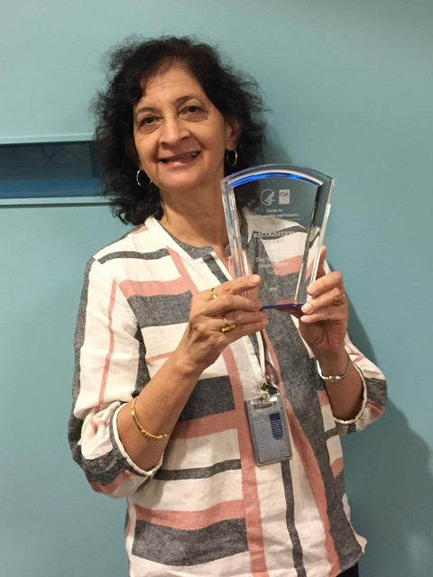

Regulatory strategy built by former FDA reviewers.
Capital deployed by people who understand what they’re funding.
Leadership
Tanmay is a polymer scientist and former U.S. FDA CDRH scientist and lead reviewer, now based in Pune, India. His work at FDA's Center for Devices and Radiological Health included scientific review of premarket submissions, materials evaluation, biocompatibility, chemical characterization, and standards development, including ASTM F3718. He founded Tacticity to bring the scientific rigor of the U.S. FDA review process directly to the Indian medtech ecosystem. For Tanmay, regulatory strategy is a structured technical argument that must withstand expert review, not paperwork.
Utkarsh Jain is an ace investor with nearly two decades of experience navigating the Indian markets. He is the Founder and CEO of Fintree, where he also serves as lead instructor, and works as a portfolio advisor and consultant to family offices, UHNIs, and HNIs, including A-list celebrities. He is visiting faculty at several top-tier business schools in India and has trained professionals across leading finance sector companies, including a number of NIFTY 50 firms. He holds qualifications as a Chartered Accountant, CFA Charterholder, FRM Charterholder, CFP Charterholder, and LLB.

Dr. Mamta Gautam-Basak, PhD
Scientific Advisor
Dr. Gautam-Basak brings over 24 years of experience at the U.S. FDA, including senior CMC leadership roles at CDER such as Lead Chemist for Quality Policy in the Office of Pharmaceutical Quality. She has led global CMC regulatory strategy for INDs, NDAs, BLAs, and MAAs at organizations including BridgeBio and Celldex Therapeutics, and holds a PhD in Analytical Chemistry from IIT Delhi. Her expertise in chemistry, manufacturing, and controls strengthens Tacticity's ability to guide clients on complex regulatory pathways. While at FDA, she also conducted foreign inspections, including PAI and GMP surveillance, and has extensive experience reviewing inspectional observations and 483s and developing solutions in response.
Anne Lucas
Scientific Advisor
Anne Lucas is a retired research chemist with the U.S. FDA and author of more than 70 published journal articles and book chapters. She also worked with organizations such as ASTM and AAMI to establish consensus standards for the testing and labeling of medical device products, and performed extensive reviews of premarket submissions from sponsors, including IDEs, PMAs, and 510(k)s, for sterility, biocompatibility, toxicology, and analytical methods. In addition, she was involved in federal register notices and guidance documents, responded to citizens’ petitions, and served as a field investigator. In March 2020, she reviewed emergency use authorizations for the decontamination of medical devices, investigated COVID-19-related compliance allegations, and performed analysis of medical device reporting (MDR) events.
Abraham Joy
Scientific Advisor
Abraham Joy is Professor and Chair of the Department of Bioengineering at Northeastern University, where his research focuses on biomaterials for wound healing, antimicrobial and antibiofilm strategies, soft-tissue replacement, and sustained drug delivery. He earned his PhD in Chemistry from Tulane University, followed by postdoctoral research at the Georgia Institute of Technology and an NIH Ruth Kirschstein postdoctoral fellowship at Rutgers University. Prior to Northeastern, he spent over a decade at the University of Akron, rising from assistant to full professor of polymer science, and served as an NSF program director for the Biomaterials program from 2021 to 2023. He is a recipient of the Burroughs Wellcome Award, the 3M Non-tenured Faculty Award, and an NSF CAREER Award, and was inducted into the 2025 class of AIMBE Fellows.